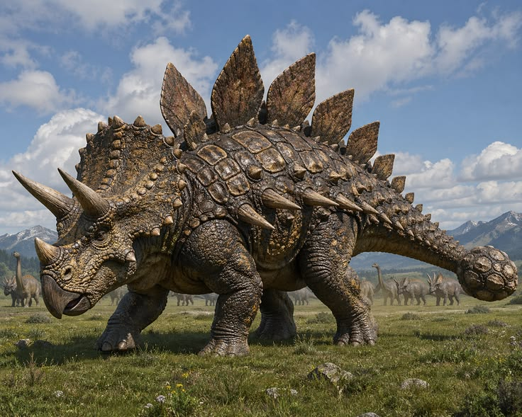

Anatomia & Biomecânica
Cretáceo Superior
TRICERATOPS
Chifres Supraorbitais
Até 1,0 m
Escudo Craniano
Maciço (Sólido)
Massa Corporal
6 a 12 Toneladas
Velocidade Máxima
25 - 32 km/h

Herbívoro Ceratopsídeo
Gola Óssea e Proteção: Diferente de outros ceratopsídeos, o escudo parietal do Triceratops era completamente maciço e sem cavidades verticais, servindo como uma blindagem anatômica contra predadores e como ponto de ancoragem para a forte musculatura do pescoço.
Bateria Dentária Contínua: Possuía centenas de dentes organizados em colunas verticais que se autorrenovavam. Funcionando como tesouras duplas, permitiam mastigar e processar vegetação extremamente dura, como cicas e palmeiras rasteiras.